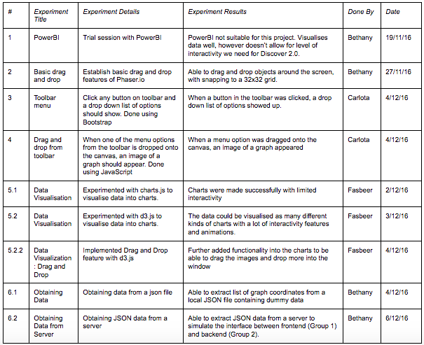

Web Technologies
- CSS
- Javascript
- Power BI
- AngularJS
- Phaser.io
- Data Mining
How did we choose the technologies used to develop our application?
With the project aiming to essentially transform the desktop app discovery sims into a cloud based webapp, our client suggested a couple of libraries and languages to be used to experiment and research on so we looked into Lynda.com videos, w3schools and other tutorials to learn more about them and see if they can be implemented on our webapp.
When we will build the application in Term 2, we will connect the different parts of the prototype and also use the data provided by Team 2, who are responsible of the data mining part of our project.
For Data Visualization, we considered charts.js and d3.js. We researched and experimented with both the libraries, one being a charting library and the latter being a data visualisation library. With d3.js many interactive charts and visuals can be made by creating and manipulating SVG (Scalable Vector Graphics) and HTML.
We experimented with the different technologies we researched by creating prototypes and performing functions that the user would carry out. We then recorded our results in the following table:
